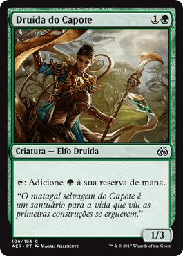
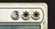

Objetivo do Jogo
MTG se trata de uma batalha entre você e seu
oponente!
No game você toma o papel de um PLANESWALKER, um mago incrivelmente poderoso capaz de
caminhar pelo multiverso. Os jogos de MTG simulam a batalha entre dois magos (ou mais, dependendo do formato
do game). Como em qualquer jogo de cards, você dispõe de um baralho. No formato padrão de jogo, um baralho
de magic deve conter 60 cards. Quando em jogo, este baralho é chamado de GRIMÓRIO.
Grimórios são livros contendo receitas mágicas, usados por magos e feiticeiros.
Em resumo, você deve derrotar seu oponente, e existem basicamente 4 tipos de maneiras de alcançar este
objetivo:
- Pontos de Vida
- Deck-Over
- Veneno
- Efeito
Nas partidas convencionais de MTG, cada jogador começa com 20 pontos de vida (PV). Vence aquele que reduzir os PV's do adversário a 0. Atacar diretamente ou usar mágicas que causam dano, reduzem os PVs do adversário. Também existem mágicas ou efeitos que fazem o jogador ganhar PVs;
No MTG, quando um jogador precisar comprar um card e seu grimório estiver vazio ele perde o jogo. Para isto, damos o nome de Deck-Over;
Alguns cards de criatura no MTG trabalham com a mecânica de
INFECTAR, ou seja, toda vez que ela causa dano diretamente ao oponente, este recebe
marcadores de veneno equivalentes. Quando um oponente atingir 10 marcadores de veneno, ele perde o jogo.
O card de criatura "Mamba assoladora" é perfeito para ilustrar esta mecânica:
Quando o efeito de um card disser que você vence o jogo, você vence o jogo,
simples assim! Existem efeitos também que fazem um determinado jogador perder o jogo.
Os cards "Aproximação do Segundo Sol" e "Espada Vorpal" ilustram bem este conceito:

Regras Básicas
- Ações de Jogo: Virar e Desvirar
- Conjurando Mágicas / Função dos Terrenos.
- Custo das Mágicas
- Feitiço X Mágica instantânea
- Etapas e Fases de um Turno
No MTG, o ato de virar um card no campo de batalha (permanente) mostra que você
está usando-o.
Você pode virar terrenos para gerar mana, criatras para mostrar que está atacando com elas
ou até mesmo para usar uma habilidade ativada cujo custo é . ( siginfica "Vire esta permanente").
Veremos, posteriormente que todas as permanentes viradas, são desviradas durante a ETAPA
DE DESVIRAR de seu próximo turno.

Você é um mago, e o que os magos fazem? Conjuram mágicas, obviamente.
Entenda que, com exceção aos terrenos, tudo no Magic: The Gathering são mágicas. Tudo que
você lança ou coloca no campo de batalha, com exceção aos terrenos, é uma mágica. Aguns tipos de mágica são: criaturas,
encantamentos, artefatos, auras, equipamentos, Planeswalkers, veículos, feitiços, mágicas
instantâneas, etc..
Se você está habituado à jogos de videogame ou RPGs deve saber que um mago tem sua fonte de energia chamada
MANA, e a usa para lançar suas mágicas, seja ela um feitiço, ou a invocação uma criatura. No MTG
não é
diferente.
Você, como um mago retirará esta energia da natureza, através dos TERRENOS. Lembrando
que os terrenos
não são mágicas, justamente por serem a sua fonte de mana no jogo. Vale lembrar que um terreno é uma
permanente, pois quando entra, ele permanece no campo de batalha e apesar de gerar mana de uma
determinada cor, ele não possui nenhuma cor, ou seja. TERRENOS SÃO PERMANENTES
INCOLORES. Lembre-se disso.
OBSERVAÇÂO: Para gerar mana usando um terreno basta virá-lo.
A imagem a seguir mostra os cinco tipos de Terrenos básicos: Planície (Mana branca), Ilha (Mana azul),
Pantano (Mana preta), Montanha (Mana vermelha) e Floresta (Mana verde):
Agora que você entendeu como os terrenos sao usados para gerar mana, Explicaremos
o custo dos cards:
Quanto mais poderosa a magia, maior o custo de mana, isto é natural. Cards com custo de mana maior,
tendem a ser mais poderosos. Fazendo uma pequena analogia, um mago precisa de muito mais mana para
invocar um Dragão do que um rato. isto faz com que os jogadores só possam invocar magicas poderosas ao
decorrer do jogo, uma vez que cada jogador só pode colocar em jogo UM terreno por
turno (salvo exceções).
Usaremos como exemplo um dos meus cards favoritos the MTG: O anjo Serra:
Repare que logo no topo do card, ao lado do nome, aparece o custo do card, ou seja, a quantidade de mana necessária para que o Anjo Serra seja conjurado e colocado no campo de batalha: . O valor 3 pode ser pago com 3 manas de qualquer cor (valor genérico) e os dois símbolos após o valor significam duas manas brancas (geradas por planícies), ou seja, o custo total do Anjo Serra é de 5 manas, significando que você terá que virar 5 terrenos para pagar seu custo (destes 5 terrenos, dois obrigatoriamente devem ser planícies).
No game, existem dois tipos de mágicas, que quando lançadas, desencadeiam um efeito e vão direto para a
pilha do cemitério: FEITIÇOS e MÁGICAS INSTANTÂNEAS. Mas qual a
diferença entre elas?
Feitiços, geralmente são mágicas mais poderosas, porém eles só podem ser lançados durante a
FASE PRINCIPAL do seu turno. Você não pode lançar um feitiço como uma resposta à uma ação
de um oponente por exemplo.
Já as MÁGICAS INSTANTÂNEAS podem ser jogadas a qualquer momento, inclusive no turno do
seu oponente! Este é um dos conceitos que fazem MTG um cardgame único. Você pode jogar uma mágica
instantânea como uma resposta à uma determinada ação que seu oponente realizou no turno dele.
Deixarei a seguir uma imagem de dois cards. "Ressurgir da cova" e "Explosão Mágica":

MTG é jogado em turnos. Você joga o seu turno, seu oponente joga o turno dele e
assim sucessivamente. Ao final de dois turnos, uma rodada é completada. Cada turno é dividido em
Fases e cada fase, em Etapas.
Se eu for esmiuçar neste blog por escrito, o conteúdo ficará imenso, então deixarei um vídeo da Carol,
explicando em detalhes como um turno funciona: